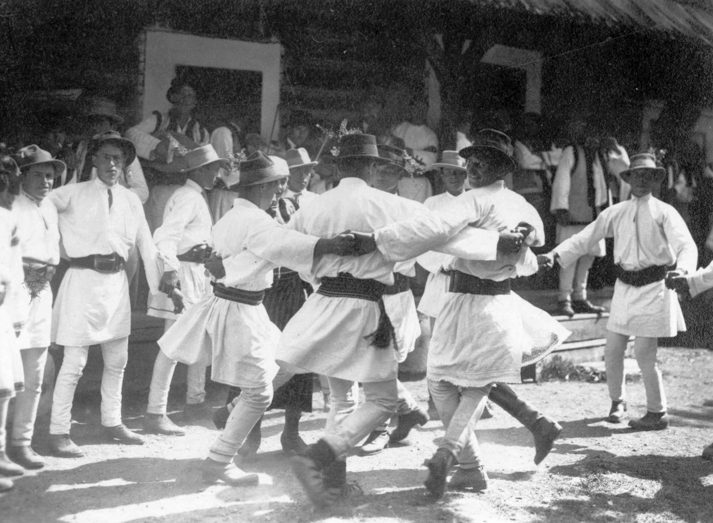

Танец на свадьбе (Фунду-Молдовей, Буковина, 1928). Фото: Иосиф Берман Румынская свадебная музыка (рум. muzica de nuntă românească, muzica nupțială românească) — комплекс обрядовых песен, инструментальных наигрышей, танцев, благопожеланий-ораций и рифмованных выкриков-стригэтур, сопровождающих традиционный свадебный обряд (nuntă) у румын Румынии, Республики Молдова и сопредельных этнографических регионов
Свадьба принадлежит к числу важнейших событий семейной жизни; исследователи описывают её как один из главных обрядов перехода в жизни человека и одновременно как настоящий многодневный спектакль с чёткими ролями и сценами. Эта сложная структура отражается и в богатстве свадебного музыкального репертуара; одни произведения строго обязательны и закреплены за конкретным моментом церемонии, другие свободно заимствуются из общего, неритуального репертуара веселья и застолья. Несмотря на региональные различия,
основная последовательность обряда сохраняется по всей территории распространения; различия касаются прежде всего объёма и разнообразия художественных проявлений, а также степени сохранности традиции в отдельных местностях.
